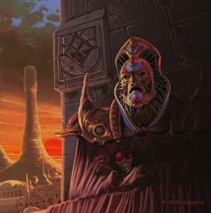

Les Rois-Dieux
Lorsque un Roi-Dieu meurt ou parvient à l'Intime Quintessence, dernier stade de la perfection intérieure, les quatre grands prêtres se réunissent après quatre jours de deuil pour choisir parmi eux un successeur. C'est ce qu'on nomme la cérémonie du conclave. Dans certains cas le choix s'arrête sur une personne autre, externe au conseil, si aucun des grands prêtres ne fait l'unanimité.
Le nom de règne des Rois-Dieux est adopté par le nouvel élu à l'issue du conclave. Le doyen parmi les grands prêtres non désignés pour occuper la fonction divine commence par demander à l'élu « Acceptez-vous votre élection canonique comme souverain divin ? ». Une fois que le souverain divin a répondu favorablement à cette question, le doyen lui pose alors une deuxième question « De quel nom voulez-vous être appelé ? ». Ce sera désormais le seul nom qui désignera le nouveau Roi-Dieu pendant toute la durée de son règne, c’est-à-dire, en principe, jusqu'à la fin de sa vie.
Vient ensuite l'Offertoire, lorsque les gigantesques portes du palais s'ouvrent et que le Roi-Dieu apparaît face à la foule massée sur l'esplanade de la Demi-Lune.
La coutume de changer de nom en montant sur le trône, en accordant les noms des Rois-Dieux modernes avec les anciens et en respectant la nomenclature de tous les Rois-Dieux depuis leur origine, contribue à sa manière à la pérennité de l'autorité royale telle que Mandala l'a instaurée.
Ci-dessous, la liste exhaustive de tous les Rois-Dieux qui se sont succédés à Laelith depuis sa fondation, avec les dates de début et de fin de leur règne.
| Début | Fin | Durée | Nom | Particularités |
|---|---|---|---|---|
| 3 | 22 | 19 | Mandala | Tout premier Roi-Dieu. Le plus adulé. Son règne se termine par l'atteinte de l'Intime Quintessence. |
| 22 | 43 | 21 | Gigogne le Preux | Nommé directement par Mandala pour lui succéder. Il œuvre dans la continuité de Mandala pour bâtir Laelith. |
| 43 | 51 | 8 | Fonvieille I | |
| 51 | 62 | 11 | Fonvieille II | |
| 62 | 96 | 34 | Phyladis I | S'implique personnellement dans les soins prodigués aux habitants de la Chaussée du lac lors de l'épidémie de choléra de 81. |
| 96 | 127 | 31 | Cémaldir I | |
| 127 | 136 | 9 | Tokinafal I | |
| 136 | 154 | 18 | Fonvieille III | Meurt suite à une chute d'escalier. |
| 154 | 193 | 39 | Tokinafal II | Lance la construction du palais du Roi-Dieu. |
| 193 | 235 | 42 | Orbal I | Plus jeune des Rois-Dieux, élu à 27 ans à peine. |
| 235 | 249 | 14 | Orbal II | |
| 249 | 282 | 33 | Orbal III | |
| 282 | 301 | 19 | Cémaldir II | |
| 301 | 313 | 12 | Cémaldir III | |
| 313 | 315 | 2 | Cémaldir IV | Seul Roi-Dieu à avoir abdiqué de sa propre volonté, ne supportant plus la pression. |
| 315 | 328 | 13 | Cémaldir V | |
| 328 | 351 | 23 | Cémaldir VI | |
| 351 | 386 | 35 | Cémaldir VII | |
| 386 | 409 | 23 | Tokinafal III | |
| 409 | 439 | 30 | Cyrmalis I | Premier Roi-Dieu à ne pas avoir été grand prêtre auparavant. |
| 439 | 483 | 44 | Cémaldir VIII | Roi-Dieu au plus long règne. |
| 483 | 522 | 39 | Phyladis II le Mignard | Convertit les tribus sauvages autour de Laelith. |
| 522 | 525 | 3 | Tokinafal IV | |
| 525 | 552 | 27 | Tokinafal V | |
| 552 | 571 | 19 | Cémaldir IX | |
| 571 | 593 | 22 | Cémaldir X | Atteint de la lèpre, il cache sa maladie au peuple jusqu'à la fin de son règne. |
| 593 | 625 | 32 | Fonvieille IV | |
| 625 | 637 | 12 | Coloquinte I le Gambilleux | Un des Rois-Dieux les plus faibles. |
| 637 | 660 | 23 | Tokinafal VI | Échappe à une tentative d'assassinat orchestrée par le temple du Nuage sur le pont des Sourires. |
| 660 | 668 | 8 | Orbal IV | |
| 668 | 685 | 17 | Cémaldir XI | |
| 685 | 708 | 23 | Néphuntes I | Assassiné par le grand prêtre du temple du Crâne, le futur Myg I. |
| 708 | 710 | 2 | Myg I Fonsalam | Assassiné lors d'une révolte de la population. |
| 710 | 723 | 13 | Fonvieille V le Magnanime | |
| 723 | 760 | 37 | Cémaldir XII | |
| 760 | 768 | 8 | Cémaldir XIII | |
| 768 | 779 | 11 | Cémaldir XIV | |
| 779 | 801 | 22 | Tokinafal VII | Signataire du traité avec les utruz. |
| 801 | 819 | 18 | Cémaldir XV | Signataire du premier accord avec la colonie naine de Vorn. |
| 830 | 836 | 6 | Orbal V | Tente de renégocier l'accord avec les nains de la falaise de Vorn. |
| 836 | 852 | 16 | Nadayat le Précieux | Créateur de l'Académie du bel art. |
| 852 | 891 | 39 | Célithal le Grand | Créateur des Ambassades laelithiennes et de l’hôtel des Messagers. |
| 891 | 912 | 21 | Teaphanerys I | |
| 912 | 931 | 19 | Cémaldir XVI | |
| 931 | 953 | 22 | Néphuntes II | |
| 953 | 955 | 2 | Teaphanerys II | Atteint d'une maladie incurable, il succombe avant la fin de sa deuxième année de règne. |
| 955 | 962 | 7 | Teaphanerys III | Reste célèbre pour les six épouses qu'il a eu avant de monter sur le trône. |
| 962 | 968 | 6 | Teaphanerys IV | Meurt de syphilis. |
| 968 | 986 | 18 | Phyladis III | |
| 986 | 1012 | 26 | Cyrmalis II | |
| 1012 | 1023 | 11 | Teaphanerys V | |
| 1023 | 1033 | 10 | Fonvieille VI | |
| 1033 | 1046 | 13 | Teaphanerys VI | Paranoïaque, il condamne à mort deux des grands prêtres pour trahison. |
| 1046 | 1062 | 16 | Cémaldir XVII | |
| 1062 | 1083 | 21 | Mansour I le Magnifique | |
| 1083 | 1096 | 13 | Coloquinte II | Inaugure la Divine Écluse. |
| 1096 | 1114 | 18 | Teaphanerys VII | |
| 1114 | 1126 | 12 | Coloquinte III | |
| 1126 | 1139 | 13 | Teaphanerys VIII | |
| 1139 | 1157 | 18 | Teaphanerys IX | |
| 1157 | 1173 | 16 | Granforion I | |
| 1173 | 1196 | 23 | Lafel I | La rumeur veut que Lafel I avait du sang elfe. |
| 1196 | 1211 | 15 | Teaphanerys X | |
| 1211 | 1218 | 7 | Teaphanerys XI | Lance la construction des égouts, qui deviendront plus tard le Cloaque. |
| 1218 | 1229 | 11 | Bosomath l'Orgueilleux | Disparaît en 1229, probablement enlevé par une tribu du désert des Marches du Couchant. |
| 1229 | 1261 | 32 | Cémaldir XVIII | |
| 1261 | 1273 | 12 | Teaphanerys XII | |
| 1273 | 1290 | 17 | Teaphanerys XIII | Fils naturel de Teaphanerys XII. |
| 1290 | 1305 | 15 | Cyrmalis III | A souhaité être jeté dans l'Inlam au lieu de reposer au sanctuaire du Divin. |
| 1305 | 1319 | 14 | Cémaldir XIX | |
| 1319 | 1326 | 7 | Néphuntes III | |
| 1326 | 1337 | 11 | Cémaldir XX | |
| 1337 | 1354 | 17 | Mansour II | |
| 1354 | 1369 | 15 | Coloquinte IV | Avait l'habitude de se promener incognito dans la ville en empruntant le funiculaire ou les galeries du cloaque. |
| 1369 | 1392 | 23 | Méphis I le Pieux | Son règne prend fin avec la réussite de sa quête de l'Intime Quintessence. |
| 1392 | 1392 | 0 | Cémaldir XXI le Flamboyant | Atteint de folie, il est destitué par l'ensemble des grands prêtres au bout de 3 mois. |
| 1392 | 1408 | 16 | Fonvieille VII | |
| 1408 | 1417 | 9 | Tokinafal VIII | |
| 1417 | 1431 | 14 | Lafel II | |
| 1431 | 1459 | 28 | Granforion II l'Éloquent | Sert de grands discours au peuple pendant toute la durée de son règne. Il condamnera les exactions proférées par les ducs d'Agramor pendant les guerres d'épurations. |
| 1459 | - | (30) | Teaphanerys XIV | Indéniablement le Roi-Dieu qui aura le plus agit pour faire connaitre Laelith dans le monde entier. |
Écrit par ylu, adapté par blueace